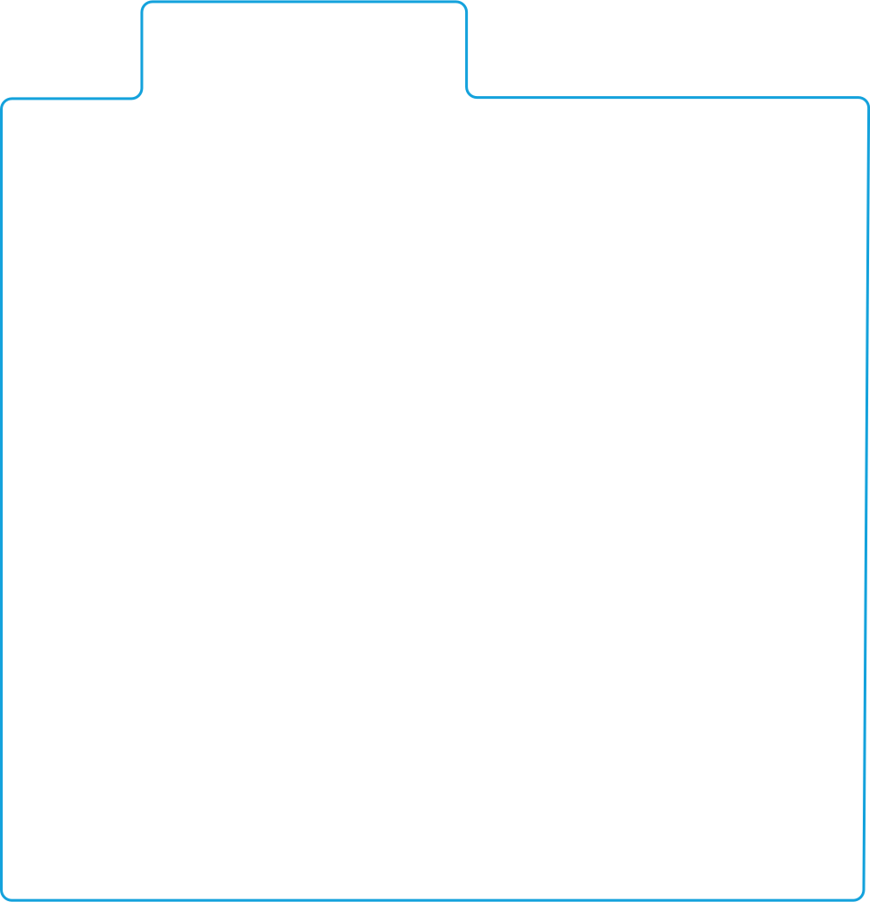

Data in Motion:


Business now moves at a rapid pace. Customers have higher expectations
for speed and connectivity. Manufacturers must respond quickly to market trends. Supply chains stretch around the world. The common thread for all of this: Data.
Companies are realizing the powerful benefits of data in motion—data generated from equipment, the movement of goods, customer transactions, and more. Through data, they can achieve Connected Operations and Connected Supply Chains to:
How data in motion works
Harness the power of data.

Tap to explore
Read more about data in motion:
Back to top
“Data in Motion Drives Enterprise Change”

As used in this document, “Deloitte” means Deloitte Consulting LLP, a subsidiary of Deloitte LLP. Please see www.deloitte.com/us/about for a detailed description of our legal structure. Certain services may not be available to attest clients under the rules and regulations of public accounting.
This publication contains general information only and Deloitte is not, by means of this publication, rendering accounting, business, financial, investment, legal, tax, or other professional advice or services. This publication is not a substitute for such professional advice or services, nor should it be used as a basis for any decision or action that may affect your business. Before making any decision or taking any action that may affect your business, you should consult a qualified professional advisor. Deloitte shall not be responsible for any loss sustained by any person who relies on this publication.
Copyright © 2020 Deloitte Development LLC. All rights reserved.
Make better predictions and stop issues before they happen
Improve ROI, efficiency, and transparency
Strengthen customer experiences and speed to market
Build resilience and competitive advantage

Automate and optimize
Connect
Predict and plan
Monitor and act

Connected Operations
Connected Supply Chains
The transformation to Connected Operations and Connected Supply Chain prepares companies for the next era of digital, efficient, fast, and flexible businesses. Unlock more value through Data in Motion and achieve agility with speed.

What is data in motion?
Data is flowing constantly, from our phones and sensors to the cloud and beyond. And that's only the beginning. It's estimated that this year, more than 750 million edge AI chips will be sold. Chips that perform or accelerate machine learning tasks on devices, rather than in a remote data center. Companies are harnessing this value by building strategies around data in motion.
Connected Operations
Connected Supply Chains

Tap to explore
Automate and optimize
Connect
Predict and plan
Monitor and act
Connect
Capture, apply, distribute, and securely store data
Connect multiple data sources to generate more powerful insights
Build custom, cloud-based dashboards and hubs that enable better predictions and decision-making
Impact:
In one instance, a multipurpose, world-class stadium sourced data from 10+ different systems and built 100+ data integration pipelines to process data in a cloud-based platform.
Predict and plan
Sensor data and predictive maintenance to identify potentially faulty equipment, reduce downtime, and prevent outages
Just-in-time inventory signals go to suppliers for dynamic fulfillment of parts
Monitor and act
AI and machine learning (ML) monitor equipment after repairs to determine if they’re working as expected or further action is required
Early warning signals go to field reps for more informed customer interactions and support
Automate and optimize
Aggregated data about failure rate, inventory, and location is used by ML models to reduce repair time and decrease costs associated with emergency maintenance
Connect
Capture, apply, distribute, and securely store data
Connect multiple data sources to generate more powerful insights
Build custom, cloud-based dashboards and hubs that enable better predictions and decision-making
Impact:
In one instance, a multipurpose, world-class stadium sourced data from 10+ different systems and built 100+ data integration pipelines to process data in a cloud-based platform.
Predict and plan
Predictive analytics determine when and how supplies will be available to improve production planning, minimize waste, and support proactive customer communication

Monitor and act
Smart factory sensors track and monitor component supplies along with equipment performance to enhance throughput and yield
Sensors capture data such as temperature and humidity to provide real-time actionable insights and equipment adjustments and provide visibility into shipment location and progress
Automate and optimize
Automation, AI, and ML replace manual efforts in planning and highlight where bottlenecks are likely to occur
Routes are optimized and companies make better real-time delivery decisions for transitioning goods
data in motion